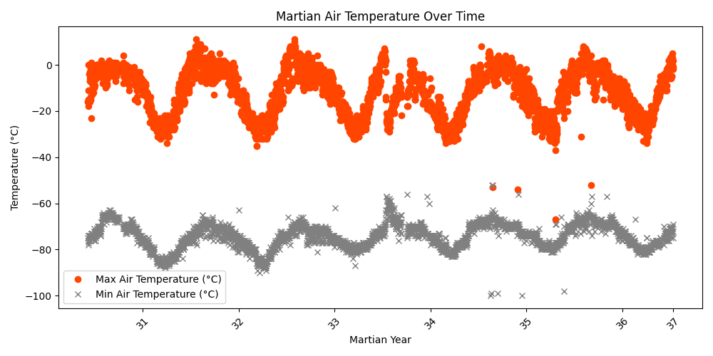
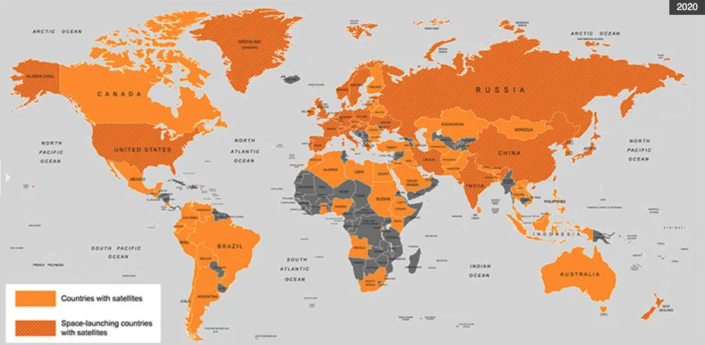
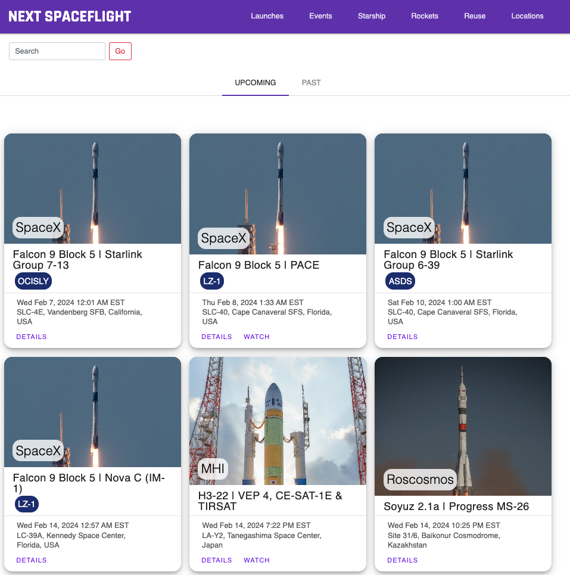

| DATE | G160241A027NBEA | |
|---|---|---|
| 0 | 1959-01-01 | 0.150 |
| 1 | 1960-01-01 | 0.323 |
| 2 | 1961-01-01 | 0.444 |
| 3 | 1962-01-01 | 0.928 |
| 4 | 1963-01-01 | 1.801 |
2 Data Sources
- All the data used for this project is available here.
- Links to the data sources are included in the citations, available by hovering over them.
2.1 Public Sector Space Exploration
The raw data collected for this section is available here, and the sources are provided in the text.
Time series in this section include:
- Public yearly expenditure on space exploration in the U.S.
- Mars daily air temperature (seasonal)
- Mars daily ground temperature (seasonal)
- Mars daily sunrise and sunset times (seasonal)
Public Expenditure on Space Exploration
The data on Public Expenditure on Space Exploration, sourced from U.S. Bureau of Economic Analysis (n.d.), traces the financial commitment of the United States to space exploration initiatives from the late 1950s. This dataset reveals a progressive increase in spending over the initial years, starting from a modest 0.150 billion dollars in 1959. The trend of escalating investment is further underscored by the 1963 figure, which rose quickly to 1.801 billion dollars, showcasing the U.S.’s commitment to establishing its presence in space and achieving technological supremacy during the Cold War era. As of 2022, this figure had grown to 15.5 billion dollars. Summary data of receipts and outlays of the U.S. Government to NASA from Department of the Treasury & Bureau of the Fiscal Service (n.d.) is also included.
Here is a view of a sample of the data (U.S. Bureau of Economic Analysis, n.d.):
Mars Curiosity Rover Weather Data
The Mars Curiosity Rover Weather Data, collected from Centro de Astrobiología (CSIC-INTA) (n.d.) using Python’s selenium library, offers detailed meteorological observations from the Rover Environmental Monitoring Station (REMS) aboard the Mars Science Laboratory (MSL) rover. This dataset captures various aspects of the Martian atmosphere, such as air and ground temperatures, pressure, and ultraviolet radiation levels, with daily variability influenced by the rover’s activities and environmental factors like temperature, orientation, shading, and dust accumulation. For instance, in late January 2024, during Mars’ autumn season, the data shows a fluctuation in air temperature ranging from -1°C to 3°C for maximums and plummeting to as low as -75°C for minimums. Ground temperatures varied between 13°C and 16°C for maximums, with minimums reaching down to -84°C. The code used to collect the data is available here, and the data used to process it is available here. Additional data containing the year starts and seasons in Mars based on longitudes was obtained from The Planetary Society (2024).
Here is a view of a sample of the data (scrollable to the right) (Centro de Astrobiología (CSIC-INTA), n.d.):
| curiosity_sol | earth_date_utc | mars_year | mars_month | solar_longitude_degrees | season | air_temperature_max_celsius | air_temperature_min_celsius | ground_temperature_max_celsius | ground_temperature_min_celsius | pressure_current_pascals | sunrise_and_sunset_max | sunrise_and_sunset_min | ultraviolet_radiation_current | |
|---|---|---|---|---|---|---|---|---|---|---|---|---|---|---|
| 0 | 4081 | 2024-01-29 | 37 | 7 | 189 | autumn | -1.0 | -69.0 | 13.0 | -78.0 | 730.0 | 05:18:00 | 17:21:00 | high |
| 1 | 4080 | 2024-01-28 | 37 | 7 | 188 | autumn | -2.0 | -72.0 | 14.0 | -78.0 | 729.0 | 05:18:00 | 17:21:00 | high |
| 2 | 4079 | 2024-01-27 | 37 | 7 | 188 | autumn | 2.0 | -75.0 | 14.0 | -78.0 | 729.0 | 05:18:00 | 17:21:00 | high |
| 3 | 4078 | 2024-01-26 | 37 | 7 | 187 | autumn | 3.0 | -73.0 | 16.0 | -84.0 | 728.0 | 05:18:00 | 17:21:00 | high |
| 4 | 4077 | 2024-01-25 | 37 | 7 | 186 | autumn | 0.0 | -70.0 | 15.0 | -75.0 | 728.0 | 05:18:00 | 17:20:00 | high |
As an example, Figure 2.1 shows the Martian air temperature over time. The dates have been proxied to that of Earth for the plot.

2.2 Public Interest in Space Exploration
The raw data collected for this section is available here, and the sources are provided in the text.
Time series in this section include:
- Google Trends data for “Space Exploration”
- Google Trends data for “Mars”
- Google Trends data for “SpaceX”
- Google Trends data for “Space Exploration”
Google Trends Data
The Google Trends data provides insights into the public interest in topics of Mars (Google Trends, n.d.-a), Space Exploration (Google Trends, n.d.-c), SpaceX (Google Trends, n.d.-d) and Satellites (Google Trends, n.d.-b) and satellites over five years. By examining weekly search volumes in the United States, we can observe fluctuations in interest levels. These numbers reflect the relative search interest in space exploration, indicating how public engagement with the topic changes over time. This data can be helpful to understand trends, seasonal variations, or impacts of specific events on the public’s interest in space-related topics.
Here is a view of a sample of the data [(Google Trends, n.d.-c)]:
| Category: All categories | |
|---|---|
| Week | space exploration: (United States) |
| 2019-02-03 | 59 |
| 2019-02-10 | 65 |
| 2019-02-17 | 61 |
| 2019-02-24 | 74 |
Figure 2.2 shows the Google Trends search interest for the Space Exploration term. Further research will reveal whether these patterns correlate to specific events in the industry.
Space Exploration.2.3 Use of Space Infrastructure
The raw data collected for this section is available here, and the sources are provided in the text.
Time series in this section include:
- Country of operator of satellite launched.
- Purpose of satellite launched.
- Status of weather satellites launched (includes launch and end-of-life date).
- Agency of weather satellites launched.
Satellite Data
The data extracted from World Meteorological Organization (n.d.), the Meteorological Satellite Launch Database encompasses various information such as the satellite’s name, its official U.N. registry country, the operator or owner country, the entity managing it, its intended users, purpose, and more specific operational details. For instance, the dataset includes 1HOPSAT-TD, a high optical performance satellite by Hera Systems for Earth observation through infrared imaging in a low Earth orbit (LEO), with a launch date of November 12, 2019. This dataset shows the global engagement in space exploration and utilization for varied purposes, from commercial to educational. Additionally, the Satellites Currently in Orbit Dataset from Union of Concerned Scientists (2023) shows similar information but is limited to active satellites.

Here is a view of a sample of the data (Union of Concerned Scientists, 2023):
| Name of Satellite, Alternate Names | Current Official Name of Satellite | Country/Org of UN Registry | Country of Operator/Owner | Operator/Owner | Users | Purpose | Detailed Purpose | Class of Orbit | Type of Orbit | Longitude of GEO (degrees) | Perigee (km) | Apogee (km) | Eccentricity | Inclination (degrees) | Period (minutes) | Launch Mass (kg.) | Dry Mass (kg.) | Power (watts) | Date of Launch | Expected Lifetime (yrs.) | Contractor | Country of Contractor | Launch Site | Launch Vehicle | COSPAR Number | NORAD Number | Comments | Unnamed: 28 | Source Used for Orbital Data | Source | Source.1 | Source.2 | Source.3 | Source.4 | Source.5 | Source.6 | |
|---|---|---|---|---|---|---|---|---|---|---|---|---|---|---|---|---|---|---|---|---|---|---|---|---|---|---|---|---|---|---|---|---|---|---|---|---|---|
| 0 | 1HOPSAT-TD (1st-generation High Optical Perfor... | 1HOPSAT-TD | NR | USA | Hera Systems | Commercial | Earth Observation | Infrared Imaging | LEO | Non-Polar Inclined | 0.0 | 566 | 576 | 0.001510 | 36.90 | 96.08 | 22 | NaN | NaN | 11/12/2019 | 0.5 | Hera Systems | USA | Satish Dhawan Space Centre | PSLV | 2019-089H | 44859 | Pathfinder for planned earth observation const... | NaN | JMSatcat/3_20 | https://spaceflightnow.com/2019/12/11/indias-5... | https://www.herasys.com/ | NaN | NaN | NaN | NaN | NaN |
| 1 | AAC AIS-Sat1 (Kelpie 1) | AAC AIS-Sat1 (Kelpie 1) | United Kingdom | United Kingdom | AAC Clyde Space | Commercial | Earth Observation | Automatic Identification System (AIS) | LEO | Sun-Synchronous | 0.0 | 637 | 654 | 0.001510 | 98.00 | 95 | 4 | 4 | NaN | 03/01/2023 | NaN | AAC Clyde Space | Sweden/UK/USA/Netherlands | Cape Canaveral | Falcon 9 | 2023-001DC | 55107 | Provide AIS information to Orbcomm. | NaN | JMSatcat/9_23 | https://www.aac-clyde.space/articles/aac-clyde... | NaN | NaN | NaN | NaN | NaN | NaN |
| 2 | Aalto-1 | Aalto-1 | Finland | Finland | Aalto University | Civil | Technology Development | NaN | LEO | Sun-Synchronous | 0.0 | 497 | 517 | 0.001450 | 97.45 | 94.7 | 5 | NaN | 4.5 | 23/06/2017 | 2.0 | Aalto University | Finland | Satish Dhawan Space Centre | PSLV | 2017-036L | 42775 | Technology development and education. | NaN | JMSatcat/10_17 | https://directory.eoportal.org/web/eoportal/sa... | NaN | http://www.planet4589.org/space/log/satcat.txt | NaN | NaN | NaN | NaN |
| 3 | AAt-4 | AAt-4 | Denmark | Denmark | University of Aalborg | Civil | Earth Observation | Automatic Identification System (AIS) | LEO | Sun-Synchronous | 0.0 | 442 | 687 | 0.001510 | 98.20 | 95.9 | 1 | NaN | NaN | 25/04/2016 | NaN | University of Aalborg | Denmark | Guiana Space Center | Soyuz-2.1a | 2016-025E | 41460 | Carries AIS system. | NaN | Space50 | http://spaceflightnow.com/2016/04/26/soyuz-bla... | NaN | http://space50.org/objekt.php?mot=2016-025E&ja... | NaN | NaN | NaN | NaN |
| 4 | ABS-2 (Koreasat-8, ST-3) | ABS-2 | NR | Multinational | Asia Broadcast Satellite Ltd. | Commercial | Communications | NaN | GEO | NaN | 75.0 | 35,778 | 35,793 | 0.000178 | 0.08 | 1436.03 | 6,330 | NaN | 16,000.00 | 06/02/2014 | 15.0 | Space Systems/Loral | USA | Guiana Space Center | Ariane 5 ECA | 2014-006A | 39508 | 32 C-band, 51 Ku-band, and 6 Ka-band transpond... | NaN | ZARYA | http://www.absatellite.net/satellite-fleet/?sa... | NaN | http://www.zarya.info/Diaries/Launches/Launche... | http://www.absatellite.net/2010/10/13/asia-bro... | http://www.spacenews.com/article/satellite-tel... | NaN | NaN |
2.4 Private Sector Space Exploration
The raw data collected for this section is available here, and the sources are provided in the text.
Time series in this section include:
- Stock data for ARK Space Exploration ETF (ARKX)
- Stock data for Kratos Defense & Security (KTOS)
- Stock data for Trimble Inc. (TRMB)
- Stock data for Aerovironment Inc. (AVAV)
Space Exploration Stock Data
The Space Exploration Stock Data, sourced from Yahoo Finance, details the market performance of the ARK Space Exploration ETF (ARKX) (Yahoo Finance, n.d.-b), Kratos Defense & Security (KTOS) (Yahoo Finance, n.d.-c), Trimble Inc. (TRMB) (Yahoo Finance, n.d.-d), and Aerovironment Inc. (AVAV) (Yahoo Finance, n.d.-a) over a brief period of five years. These datasets include daily trading metrics, including opening, high, low, close, and adjusted close prices, alongside the trading volume. For instance, on March 30, 2021, ARKX opened at $20.50, reached a high of $20.70, a low of $20.07, and closed at $20.30, with a trading volume of approximately 14.6 million shares. These figures indicate active trading and fluctuating investor interest in space exploration companies.
Here is a view of a sample of the data (Yahoo Finance, n.d.-b):
| Date | Open | High | Low | Close | Adj Close | Volume | |
|---|---|---|---|---|---|---|---|
| 0 | 2021-04-01 | 20.889999 | 21.000000 | 20.730000 | 20.910000 | 20.910000 | 6543000 |
| 1 | 2021-04-05 | 21.270000 | 21.270000 | 21.010000 | 21.139999 | 21.139999 | 5038100 |
| 2 | 2021-04-06 | 21.129999 | 21.139999 | 21.030001 | 21.100000 | 21.100000 | 3597900 |
| 3 | 2021-04-07 | 21.030001 | 21.049999 | 20.750000 | 20.809999 | 20.809999 | 2992600 |
| 4 | 2021-04-08 | 20.969999 | 21.049999 | 20.860001 | 21.049999 | 21.049999 | 2124300 |
Figure 2.4 shows the adjusted price of ARKX over time, where we see an overall decreasing trend during 2022, largely as a result of interest rate movements in the global markets.
2.5 Global Involvement in Space Exploration
The raw data collected for this section is available here, and the sources are provided in the text.
Time series in this section include:
- Location of mission launch.
- Company of mission launch.
- Status of mission launch.
Launches by Country Data
The Launches by Country Database from Next Spaceflight (n.d.) details global space launch activities, documenting various missions’ specifics, including the launching company, location, date and time, mission details, and more. For instance, SpaceX’s launch on August 7, 2020, from LC-39A at Kennedy Space Center in Florida, USA, involved a Falcon 9 Block 5 rocket carrying Starlink V1 L9 & BlackSky satellites, noted for its active status and successful outcome. The database captures a variety of missions from different countries, highlighting the growing global collaboration in space endeavors.

Here is a view of a sample of the data (Next Spaceflight, n.d.):
| Company Name | Location | Datum | Detail | Status Rocket | Rocket | Status Mission | |
|---|---|---|---|---|---|---|---|
| 0 | SpaceX | LC-39A, Kennedy Space Center, Florida, USA | Fri Aug 07, 2020 05:12 UTC | Falcon 9 Block 5 | Starlink V1 L9 & BlackSky | StatusActive | 50 | Success |
| 1 | CASC | Site 9401 (SLS-2), Jiuquan Satellite Launch Ce... | Thu Aug 06, 2020 04:01 UTC | Long March 2D | Gaofen-9 04 & Q-SAT | StatusActive | 29.75 | Success |
| 2 | SpaceX | Pad A, Boca Chica, Texas, USA | Tue Aug 04, 2020 23:57 UTC | Starship Prototype | 150 Meter Hop | StatusActive | NaN | Success |
| 3 | Roscosmos | Site 200/39, Baikonur Cosmodrome, Kazakhstan | Thu Jul 30, 2020 21:25 UTC | Proton-M/Briz-M | Ekspress-80 & Ekspress-103 | StatusActive | 65 | Success |
| 4 | ULA | SLC-41, Cape Canaveral AFS, Florida, USA | Thu Jul 30, 2020 11:50 UTC | Atlas V 541 | Perseverance | StatusActive | 145 | Success |